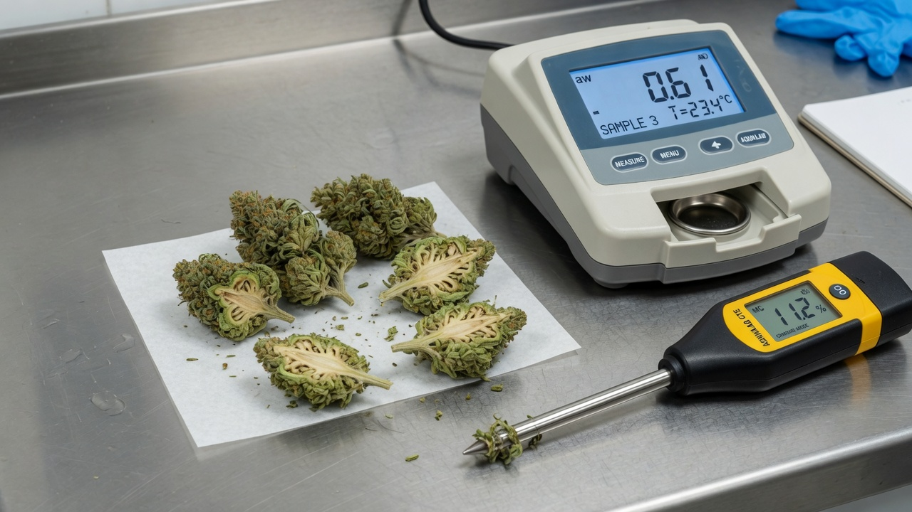

Harvest, drying, trimming and curing
This paper gives all the post-harvest steps, from the harvest of the plants to the sealed flower. It shows when to harvest the plants, how to dry the flower and keep the terpenes in it, and how to prevent mold. It also shows how to remove the leaves without damage to the trichomes, and how to do the curing until the water activity is stable. After you read this paper, you will know the target number for each step and a method that you can do again.
Purpose and scope
Post-harvest is all the steps that you do after you cut the plant: drying, trimming, curing and storage. An error in these steps can cause damage to the results of many weeks of careful cultivation. The damage can occur in a small number of days. If you dry the flower too quickly or too much, the aroma and the weight decrease. If you dry the flower too slowly, or the flower is too wet, mold starts.
Keep the flower in a small safe zone. The flower must be sufficiently dry to prevent mold growth, but it must not be too dry. If the flower is too dry, the aroma and the weight decrease. A very dry flower has less mass for sale, but a correct control of this stage keeps this mass. Most growers dry the flower too much when they do not want to. Thus supplier figures show that the yield can increase by approximately 5 to 10%.[8]
This paper is for you if you do your initial harvest and want results that you can get again. It is not necessary to know the post-harvest procedure before you read this paper. The paper gives a definition of each term where you first read the term. You can use this paper with the mold-risk and airflow-design papers.
Definitions
Two of these terms are the most important in this paper. It is not necessary to know the terms at this time. Each term occurs again in the next sections.
Evidence and limitations
We want each paper to be correct. Thus we examine each paper for information that is not solid. This information comes from the view of one grower, from a small number of sources, or from grower methods that have no controlled test. We identify this information, and we do not show it as solid.
Frequently there is no paper for the decision that you must make. Then we use the reports of other growers and the methods that work in the rooms that we know. This information can help you, but it is not the result of a laboratory test. Use the methods that work for your plants, for your room and for your meters. If a table does not agree with your crop, use the data from your crop and record the difference.
- Water activity is a better indicator of the risk from microbes than only the moisture percentage. For flower, an ASTM-type range is 0.55 to 0.65.
- Slow drying in darkness at a cool temperature keeps more terpenes than fast drying at a hot temperature.
- In storage, light and heat increase the rate of degradation of cannabinoids and terpenes.
- Usual values of 60 °F and 60% RH for drying, and the procedure to hang all of the plant.
- Many rooms select dry trim when quality is important.
- A supplier value of 5 to 10% yield recovered as the result of tests at many sites with peer review.
- The quantity by which trimming decreases the water activity (aw) as one value for all conditions.
If you find an error, make a report. We will correct it. Make the report on GitHub, with the name of the paper and the information that is incorrect. If you have a source, include it: Make a report of an accuracy problem. The regulations, labels and licenses of your area always override each procedure in these papers. The label weak in a paper shows the points where the risk of an error is highest.
Harvest timing
Harvest is the procedure in which you cut all the plants after they complete the flowering. Examine the flower to find the maturity of the plants. Do not use the date on the calendar.
The trichomes are the best signal of maturity. Examine the trichomes with a loupe. They are first transparent, then cloudy, then amber when the maturity increases. The change of color shows the maturity of the resin glands.[1] A usual procedure uses a set time for the flowering, with plant-work stages at days 7 to 10, 21 to 28 and 42 to 49. At the end, you cut the plants.
- Harvest is the procedure in which you cut all the plants after they complete the flowering.
- Cut one cultivar at a time, in the sequence on your list of cultivars. Thus the cultivars do not mix.
- Keep the tag of each plant attached when you cut the plant. The tag gives traceability of the batches.
- Collect the loose buds that fall on the table. Put a label on the buds of each cultivar and dry them independently.
If the calendar shows that you must cut the plants, but most of the trichomes are transparent, wait. Examine the flower to find the maturity. The date gives only an approximate indication.
Harvest method and wet-plant weighing
Cut each whole plant and hang it to dry. Do not remove the buds from the plant first. Release each plant from the bottom two layers of the trellis net (the net that holds the plant). Keep the top layer on the plant. The layer holds the plant. Then cut the primary stalk at the bottom.
Before you hang the plants, weigh each bin to record the wet weight. The wet weight is the initial weight. After the drying, compare the wet weight with the last dry weight. Thus you get the dry-to-wet ratio for each cultivar. The dry-to-wet ratio is approximately 10% of the wet weight of the whole plant (one example batch gave 10.46%). It shows how much of the mass of the harvested plants is water.
- 1Release the plantCut around the plant through the bottom and middle layers of the trellis net. Keep the top layer attached to hold the plant.
- 2Cut the stalkCut the primary stalk at the bottom. Then you can remove the plant in one piece.
- 3Fill the binPut 7 to 10 whole plants in each bin of 208 L (55 gal). Do not put too many plants in the bin. Too many plants cause damage to the flower.
- 4Weigh the wet plantsSet the scale to zero when the empty bin is on it. Then weigh the bin with the plants to record the wet weight. The wet weight is the baseline for all the yield records.

Drying environment
Keep the dry room at 16 °C (60 °F) and 60% RH, with the fans on and the lights off. Clean the room fully before you put the plants in it. At these setpoints, the takedown of whole plants is usually possible after 10 to 14 days.[8]
Slow drying in a cool room keeps the terpenes. Terpenes evaporate in heat and in dry air. Slow drying also prevents the condition where the outer part of the bud is dry and the inner part stays wet. This condition is the usual cause of mold in the bud that you cannot see.
Keep the light off, because light causes the degradation of cannabinoids and terpenes with time.[4] The best drying method can have small differences for different cultivars. Thus the setpoints are a good start point, but they are not correct for all cultivars.[2]
- Setpoints: 16 °C (60 °F), 60% RH, fans on, lights off, doors closed. Keep the number of persons that go into the room as small as possible. Thus the environment stays stable.
- The drying of whole plants is approximately 10 to 14 days at these setpoints.
- If the RH in the room is more than 60% and the dehumidification is too small, exhaust fans can decrease the humidity.
- Keep an equal space between the racks. Thus the air flows to each plant and the buds dry at the same rate. Clean the room fully before each load.
Water activity
After the hang-dry, some moisture stays in the flower. Some moisture is more dangerous than other moisture. The plant material holds some of the water in its inner part, and this water is not dangerous. The free water at the surface is the water that microbes use.
Water activity (aw) shows how available the remaining moisture is to microbes, on a scale of 0 to 1.00. Mold and yeast can increase in number at 0.70 aw and higher. Bacteria that cause disease can increase in number at 0.85 aw. The risk increases quickly near these thresholds. If the aw is less than approximately 0.55, the quality frequently decreases, although the growth of microbes becomes slower. The ASTM range of 0.55 to 0.65 is the target for dry flower.[7]
The growth of microbes gives the maximum value of this range. Quality gives the minimum value. If the aw is less than 0.55, the terpenes evaporate and the quality decreases.
These two limits give a range of 0.55 to 0.65 aw. This range is the same as the range in the ASTM D8197 standard for dry cannabis flower.[5] Start the testing of samples at approximately day 7 to 8. The takedown is the removal of the plants from the racks. Do the takedown when the average aw of the batch is 0.60 to 0.62. Thus there is headroom to the 0.65 mold limit.
- Water activity is the better number for control, because it has much less variation than the readings of a low-cost moisture meter.
- In one example, the measurement of water activity gave a yield precision that was approximately 10 times better (from ±1% to ±0.12%).
- Flowers with a high density usually have a lower aw at the end of the drying than flowers with a low density. The difference is small. Use the meter as an indication, and also smell the flower.
Trimming and trichome protection
Trimming removes the leaves from the bud, and thus the bud is clean. There are two times for the trimming. Wet trim is the trimming immediately after you cut the plants, before the drying. Dry trim is the trimming after the hang-dry. A dry trim makes the drying slower, and it causes less damage to the oils that give the aroma. Thus many facilities select a dry trim to keep more of the terpenes.[3]
Do not touch the flower. If you touch the flower, you remove the trichomes that contain the potency and the aroma. Then the buds have a smooth, matt surface.
To do a dry trim, do the takedown. Then cut the plants into sections of 20 to 30 cm (8 to 12 in). Remove the large fan leaves with your hands. Then cut the smaller sugar leaves with scissors. When resin collects on the scissors, clean them in 71% alcohol.
- Bucking is the procedure in which you cut the buds from the stem after the trimming. Do the bucking into a sealed bag. Thus the flower does not become too dry in open air.
- Do not touch the flower. If you touch the flower, you cause damage to the trichomes.
- Remove the fan leaves with your hands (large leaves with a small number of trichomes). Then cut the sugar leaves with scissors.
- When resin collects on the scissors, clean the scissors in 71% alcohol.
- After a dry trim, measure the aw again. If you touch the flower and remove the leaves, the reading can change. Thus do not think that the aw from the hang-dry is correct.
| Wet trim | Dry trim (this paper) | |
|---|---|---|
| Time | Directly after you cut the plants | After the hang-dry of 10 to 14 days |
| Drying speed | Faster, with more damage to the flower | Slower, with less damage to the flower |
| Leaf removal | Easier (the leaf is soft) | The leaf breaks easily. You must be more careful. |
| Terpenes that you keep | Lower (you touch the flower more, and the drying is faster) | Higher. Thus growers select a dry trim. |
| Risk of damage when you touch the flower | More | Less |
Curing and storage
Curing makes the water activity the same in all the flower of the batch. It also keeps the terpenes. Without curing, there can be degradation of the terpenes in storage.
Keep the flower in containers at 16 to 18 °C (60 to 65 °F) and 58 to 62% RH. Read the humidity sensor. When the reading of a bin is more than approximately 60% RH, burp the bin. Remove the lid for 5 to 10 minutes. Then turn the barrel. Record the reading.
When the flower after the trimming is at 0.58-0.60 aw, you complete the curing. Seal the flower. Stop the burping. More burping only makes the terpenes and the water evaporate. Thus the aroma and the weight for sale decrease.
Curing also keeps the cannabinoids more stable, because you keep the product at a low temperature and without light. These conditions decrease the speed of the degradation during storage.[4]
When the flower after the trimming is at 0.58-0.60 aw, seal it. Each burp after this point makes the terpenes and the water evaporate. As a result, the aroma and the weight for sale decrease. Remove the air from the bags, but do not compress the flower. Do not put bags on top of other bags. Thus there is no damage to the structure of the buds.
Troubleshooting
Most post-harvest problems have one of three causes: the drying is too fast, the flower is too dry, or the space is too full. Too much drying can cause damage that you do not see. A low-cost moisture meter with an error of ±1% can show a reading of ‘11% moisture’. At this reading, the aw of the flower can be from 0.53 aw (too dry, with damage to the flower) to 0.66 aw (mold risk). Thus growers who use one number frequently dry the flower too much, and the weight and the aroma decrease.[5]
| Error | Result | Correction |
|---|---|---|
| Too much drying, to less than 0.55 aw | The terpenes evaporate, the aroma decreases and the weight of water decreases | Do the takedown at 0.60-0.62 aw. Stop the curing at 0.58-0.60 aw. |
| Drying that is too hot or too fast | The outer part becomes dry and the inner part stays wet. Mold can start in the inner part, and you cannot see it. | Keep 16 °C (60 °F) and 60% RH. Let the plants dry for 10 to 14 days. |
| You use only a low-cost moisture meter for the decision | An error of ±1% gives 0.53-0.66 aw, from too dry to a risk of mold. | Use a water activity test to find when you can complete the procedure. |
| Containers that are too full | The weight compresses the buds, and the moisture cannot move out of them. | Fill totes and barrels to a maximum of approximately 2/3. Fill curing barrels to a maximum of half. |
| You touch the flower, or you do not clean the room fully | You remove trichomes from the flower, and there is contamination. | Touch only the stem. Clean the room fully before each load. |
| The aw is safe, but you smell that the flower is wet | The inner part is not dry | Let the flower dry more. Smell the flower and feel it for the last check. |
Expected results and limitations
The hang-dry is approximately 10 to 14 days, and the curing is some more days. After the curing, the flower is a completed product. All of the post-harvest stage is two to three weeks. It is not fast, and you cannot make it faster.
- The post-harvest stage is weeks, not days. Use two to three weeks for the stage. Do not make the drying faster.
- Do not dry the flower too much. If you control the drying and the curing correctly, you keep the weight for sale. The figures of approximately 5 to 10% from suppliers are only examples.[8]
- The cultivar is important. The drying and the curing are different for each cultivar. Flowers with a high density and flowers with a low density have a different aw at the end. The difference is small. Thus record each batch.[2]
Record the aw, the RH, the dates and the results for each cultivar. Thus you can get good results again. The instrument gives an indication and does not make the decision. In the safe aw zone, smell the flower and feel it to make the last decision. Read the mold-risk paper for the procedure if the aw of a batch is more than the mold limit. Read the nutrient-mixing paper for the feed, which has an effect on the quality.
References
- Punja, Z.K., Sutton, D.B., & Kim, T. (2023). Glandular trichome development, morphology, and maturation are influenced by plant age and genotype in high THC-containing cannabis (Cannabis sativa L.) inflorescences. Journal of Cannabis Research, 5(1), 12. https://doi.org/10.1186/s42238-023-00178-9 https://doi.org/10.1186/s42238-023-00178-9
- Birenboim, M., Brikenstein, N., Duanis-Assaf, D., Maurer, D., Chalupowicz, D., Kenigsbuch, D., & Shimshoni, J.A. (2024). In Pursuit of Optimal Quality: Cultivar-Specific Drying Approaches for Medicinal Cannabis. Plants (Basel), 13(7), 1049. https://doi.org/10.3390/plants13071049 https://doi.org/10.3390/plants13071049
- Brikenstein, N., Birenboim, M., Kenigsbuch, D., & Shimshoni, J.A. (2024). Optimization of Trimming Techniques for Enhancing Cannabinoid and Terpene Content in Medical Cannabis Inflorescences. Medical Cannabis and Cannabinoids, 7(1), 111-118. https://doi.org/10.1159/000539192 https://doi.org/10.1159/000539192
- Fairbairn, J.W., Liebmann, J.A., & Rowan, M.G. (1976). The stability of cannabis and its preparations on storage. Journal of Pharmacy and Pharmacology, 28(1), 1-7. https://doi.org/10.1111/j.2042-7158.1976.tb04014.x https://doi.org/10.1111/j.2042-7158.1976.tb04014.x
- ASTM International. (2021). ASTM D8197-21: Standard Specification for Maintaining Acceptable Water Activity (aw) Range (0.55 to 0.65) for Dry Cannabis Flower Intended for Human/Animal Use. West Conshohocken, PA: ASTM International. https://www.astm.org/d8197-21.html (source not from a journal, for example from a manufacturer) https://www.astm.org/d8197-21.html
- U.S. Food and Drug Administration. Inspection Technical Guides: Water Activity (aw) in Foods. Office of Regulatory Affairs, FDA. https://www.fda.gov/inspections-compliance-enforcement-and-criminal-investigations/inspection-technical-guides/water-activity-aw-foods (source not from a journal, for example from a manufacturer) https://www.fda.gov/inspections-compliance-enforcement-and-criminal-investigations/inspection-technical-guides/water-activity-aw-foods
- AQUALAB (Addium, Inc.). How Water Activity Controls Microbial Growth. AQUALAB Learning Center. https://aqualab.com/learn/how-water-activity-controls-microbial-growth (source not from a journal, for example from a manufacturer) https://aqualab.com/learn/how-water-activity-controls-microbial-growth
- AROYA (Addium, Inc.). Processor's Guide to Moisture and Water Activity (Drying Cannabis). AROYA Education Guides. https://aroya.io/education-guides/drying-cannabis (source not from a journal, for example from a manufacturer) https://aroya.io/education-guides/drying-cannabis
Each citation in the paper, for example [1], refers to an item in this list. Each item is a primary source or an instruction from an authority, unless the item shows a different type. The results of cannabis tissue culture change much with the genotype. Before you use the dilutions, hormone doses and local regulations, make sure that they agree with the primary sources.